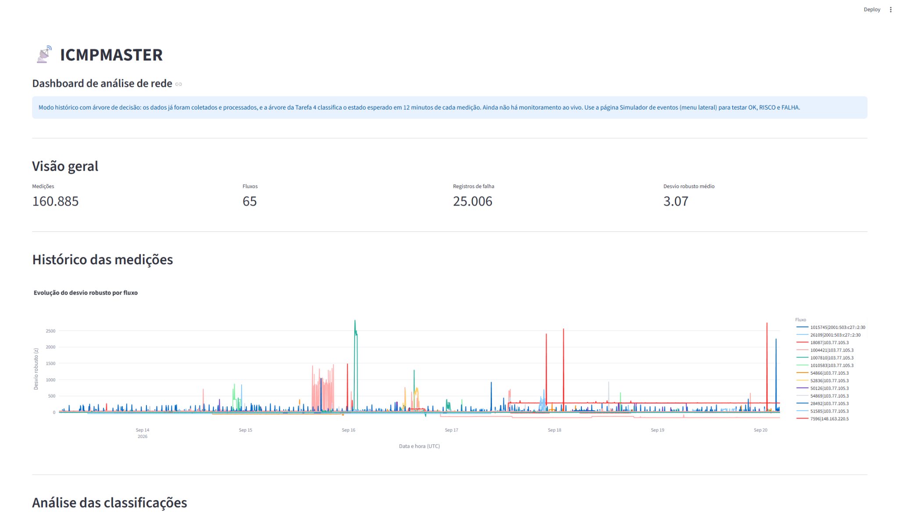
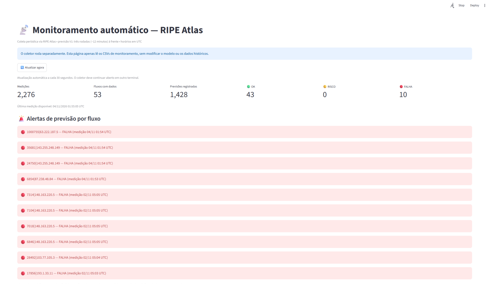
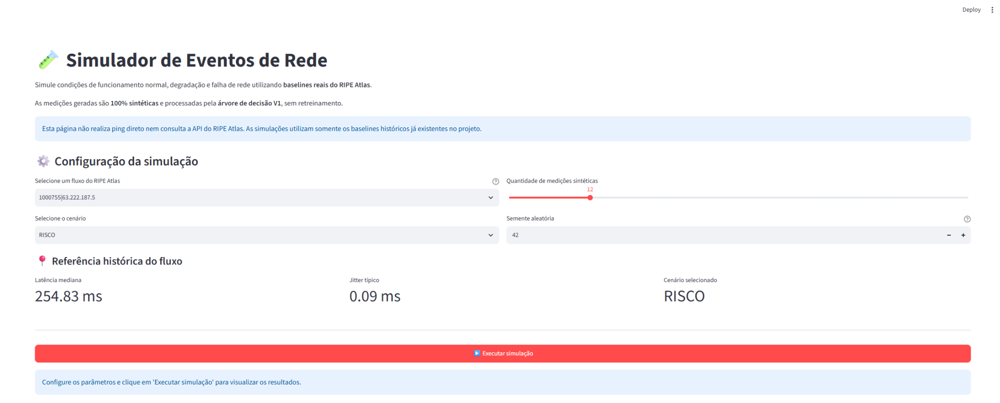
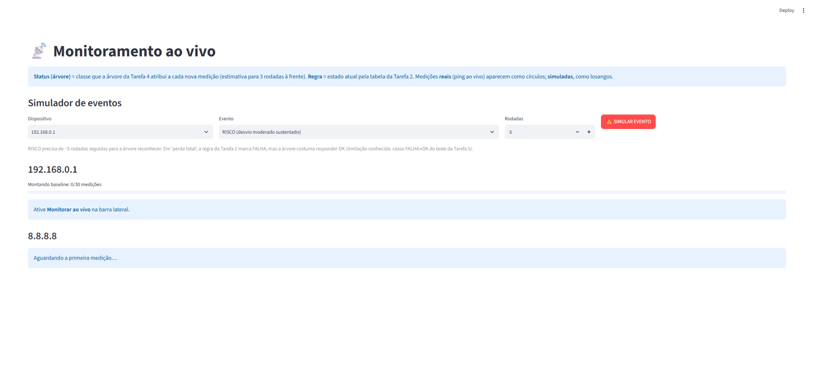

Observar
Acompanhar latência, jitter e perda de pacotes em medições de rede.
Conheça o ICMPMASTER: uma solução acadêmica que combina medições de conectividade, análise de dados e Machine Learning para identificar padrões e estimar o estado futuro da rede.
O ICMPMASTER é um projeto acadêmico que analisa medições ICMP reais do RIPE Atlas para estimar a condição futura da conectividade. Seu objetivo é identificar antecipadamente sinais de degradação e apoiar o monitoramento de redes.
Acompanhar latência, jitter e perda de pacotes em medições de rede.
Extrair características das medições e identificar comportamentos fora do padrão.
Usar uma Árvore de Decisão para estimar a condição futura da conectividade.
Um fluxo de processamento que conecta medições, análise e visualização.
Medições ICMP provenientes do RIPE Atlas, utilizadas na construção da base de análise.
Organização dos dados e cálculo de características relevantes para o modelo.
Aplicação do modelo treinado para estimar OK, RISCO ou FALHA.
Apresentação das informações no dashboard e verificação posterior das previsões.
Das medições ICMP à apresentação das previsões.
A árvore V1 foi treinada e avaliada com dados históricos. Durante o monitoramento, o modelo é reutilizado sem retreinamento a cada medição. A previsão considera as próximas três rodadas (aproximadamente 12 minutos).
O projeto utiliza medições ICMP do RIPE Atlas, organizadas por fluxo, para calcular referências históricas e características temporais usadas pela Árvore de Decisão V1.
Origem: RIPE Atlas (ICMP).
Período A: 06/09/2026 04:32 UTC a 13/09/2026 04:32 UTC — referência histórica (baseline).
Período B: 13/09/2026 04:32 UTC a 20/09/2026 04:32 UTC — período posterior de análise.
As datas se referem à configuração de coleta do projeto, não necessariamente ao intervalo de todas as capturas exibidas.
Dados-base: timestamp, identificação do fluxo, latência média, perda de pacotes e jitter.
11 atributos: z_robusto, aumento_pct, jitter_relativo, perda_pct, timeout_atual, n5_timeout, n5_aumento80, n5_risco, z_delta1, z_media3_ant e z_inclin5.
O status real é usado para avaliação e não como variável de entrada da previsão.
Treinamento e validação documentados para a Árvore de Decisão V1, com análise de F1-macro e recall por classe. A separação temporal entre referência e observações posteriores evita utilizar medições futuras na construção do baseline.
Saída: classe prevista OK, RISCO ou FALHA para três rodadas de medição à frente (cerca de 12 minutos quando a cadência é de quatro minutos).
O modelo utiliza uma Árvore de Decisão para estimar o estado da rede três rodadas de medição à frente.
Quando as rodadas ocorrem aproximadamente a cada quatro minutos, isso corresponde a um horizonte estimado de 12 minutos. Trata-se de uma classificação preditiva baseada em padrões aprendidos, não de uma garantia de antecipação de falhas.
Explorar a implementação no GitHub ↗Três rodadas à frente, em cadência aproximada de quatro minutos.
Recursos para acompanhar a qualidade da rede, demonstrar cenários e compreender o comportamento do modelo.
Visualização de medições, indicadores e comportamento da conectividade ao longo do tempo.
Processamento de medições provenientes do RIPE Atlas com geração de previsões.
Cenários controlados para demonstrar condições normais, de risco e de falha.
Acompanhamento de dispositivos por medições ICMP e aplicação do modelo.
Comparação entre previsões registradas e condições observadas depois.
Avaliações e comparações do comportamento dos modelos em dados sintéticos e reais.
Uma integração de programação, redes de computadores, visualização e aprendizado de máquina.
Resultados registrados para a Árvore de Decisão V1 na validação do projeto. São métricas de classificação e não totais de eventos ou medições do dashboard.
A classe RISCO apresentou menor capacidade de detecção na avaliação. Portanto, as previsões devem apoiar o monitoramento, não substituir diagnóstico e intervenção humana.


Interfaces reais do projeto, incluindo simulação de cenários e acompanhamento de medições.


Três rodadas de medição representam cerca de 12 minutos apenas quando a cadência é de aproximadamente quatro minutos.
As classes apresentam desempenhos diferentes, especialmente RISCO, cuja detecção ainda precisa melhorar.
O modelo foi construído sobre medições ICMP do RIPE Atlas. Seu desempenho não deve ser generalizado sem novas validações.
Conheça o ICMPMASTER: um projeto de predição da qualidade da rede com medições ICMP do RIPE Atlas e uma Árvore de Decisão.
Projeto interdisciplinar de Redes de Computadores, Estrutura de Dados II e Análise de Sistemas (2026).
Integrantes: Eduardo Quintino Filho, Felipe Veiga da Silva, Henrique de Aguiar Fernandes, Niccolas Lupetti dos Santos, Tharik Lima da Silva
Curso: Ciência da computação
Instituição: Centro Universitário Braz Cubas
Orientador(a): Andrea Ono Sakai
Repositório: github.com/HenriqueUBC/icmpmaster
Explore o código-fonte, os notebooks, os experimentos e a documentação técnica disponíveis no repositório.
Abrir repositório no GitHub ↗Projeto acadêmico interdisciplinar: Redes de Computadores, Estrutura de Dados II e Análise de Sistemas.